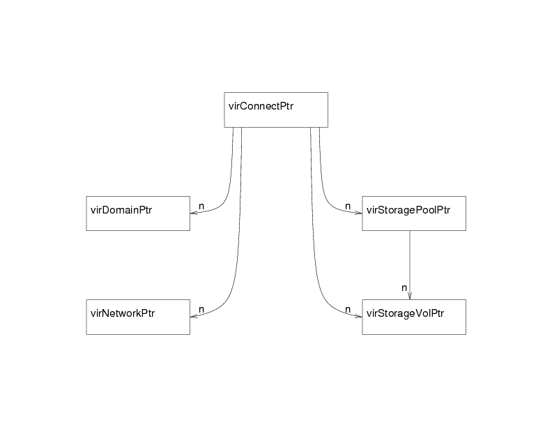
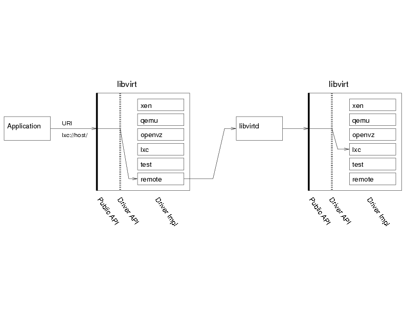

The libvirt API concepts
This page describes the main principles and architecture choices behind the definition of the libvirt API:
Objects exposed
As defined in the goals section, libvirt
API need to expose all the resources needed to manage the virtualization
support of recent operating systems. The first object manipulated though
the API is virConnectPtr which represent a connection to
an hypervisor. Any application using libvirt is likely to start using the
API by calling one of the virConnectOpen functions. You will note that those functions take
a name argument which is actually an URI to select the right hypervisor to
open, this is needed to allow remote connections and also select between
different possible hypervisors (for example on a Linux system it may be
possible to use both KVM and LinuxContainers on the same node). A NULL
name will default to a preselected hypervisor but it's probably not a
wise thing to do in most cases. See the connection
URI page for a full descriptions of the values allowed.
Once the application obtained a virConnectPtr
connection to the
hypervisor it can then use it to manage domains and related resources
available for virtualization like storage and networking. All those are
exposed as first class objects, and connected to the hypervisor connection
(and the node or cluster where it is available).

The figure above shows the five main objects exported by the API:
- virConnectPtr: represent a connection to an hypervisor.
- virDomainPtr: represent one domain either active or defined (i.e.
existing as permanent config file and storage but not currently running
on that node). The function
virConnectListDomainsallows to list all the IDs for the domains active on this hypervisor. - virNetworkPtr: represent one network either active or defined (i.e.
existing as permanent config file and storage but not currently activated.
The function
virConnectListNetworksallows to list all the virtualization networks actived on this node. - virStorageVolPtr: represent one storage volume, usually this is used
as a block device available to one of the domains. The function
virStorageVolLookupByPathallows to find the object based on its path on the node. - virStoragePoolPtr: represent a storage pool, i.e. a logical area
which can be used to allocate and store storage volumes. The function
virStoragePoolLookupByVolumeallows to find the storage pool containing a given storage volume.
Most object manipulated by the library can also be represented using XML descriptions. This is used primarily to create those object, but is also helpful to modify or save their description back.
Domains, network and storage pools can be either active
i.e. either running or available for immediate use, or
defined in which case they are inactive but there is
a permanent definition available in the system for them. Based on this
thay can be activated dynamically in order to be used.
Most kind of object can also be named in various ways:
- by their
name, an user friendly identifier but whose unicity cannot be garanteed between two nodes. - by their
ID, which is a runtime unique identifier provided by the hypervisor for one given activation of the object, but it becomes invalid once the resource is deactivated. - by their
UUID, a 16 bytes unique identifier as defined in RFC 4122, which is garanteed to be unique for long term usage and across a set of nodes.
Functions and naming conventions
The naming of the functions present in the library is usually made of a prefix describing the object associated to the function and a verb describing the action on that object.
For each first class object you will find apis for the following actions:
- Lookup:...LookupByName,
- Enumeration:virConnectList... and virConnectNumOf...:
those are used to enumerate a set of object available to an given
hypervisor connection like:
virConnectListDomains,virConnectNumOfDomains,virConnectListNetworks,virConnectListStoragePools, etc. - Description: ...GetInfo: those are generic accessor providing
a set of informations about an object, they are
virNodeGetInfo,virDomainGetInfo,virStoragePoolGetInfo,virStorageVolGetInfo. - Accessors: ...Get... and ...Set...: those are more specific
accessors to query or modify the given object, like
virConnectGetType,virDomainGetMaxMemory,virDomainSetMemory,virDomainGetVcpus,virStoragePoolSetAutostart,virNetworkGetBridgeName, etc. - Creation:
- Destruction: ...
For more in-depth details of the storage related APIs see the storage management page,
The libvirt drivers

Daemon and remote access
